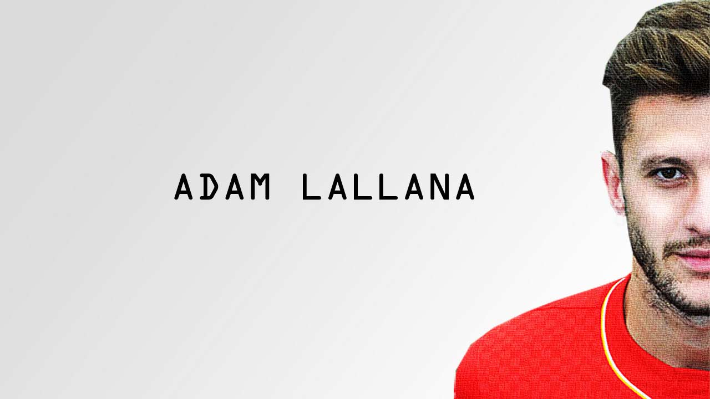
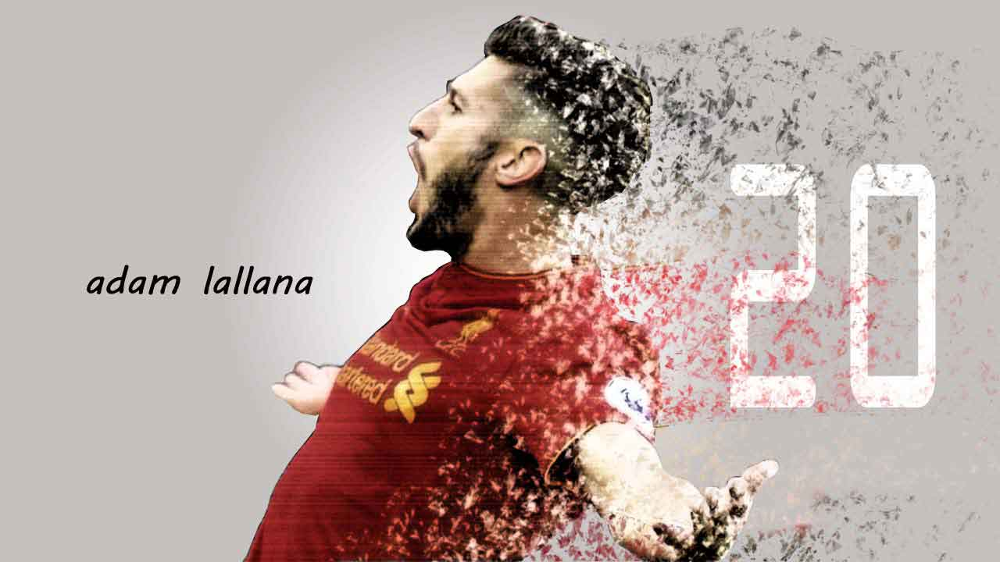

星探报告：英格兰魔术师——拉拉纳

球员资料
全名：亚当·大卫·拉拉纳（Adam David lallana）
国籍：英格兰
年龄：28岁（1988年5月10日）
出生地：圣奥尔本斯
身高：172cm
体重：73kg
惯用脚：左右脚
场上位置：攻击型中场
当前效力俱乐部：利物浦
球衣号码：20
经纪公司：Stellar Football Ltd
赞助商：PUMA
身价：2200万欧元（截止2017年2月20日）
俱乐部生涯
伯恩茅斯（1993-2000）
拉拉纳出生于英格兰东南部小镇——圣奥尔本斯，在很小的时候便受老爸的影响成为了一名埃弗顿小球迷。5岁时拉拉纳与家人一起移居到了伯恩茅斯，并加入伯恩茅斯俱乐部接受足球训练。
在樱桃的少年梯队，年少的拉拉纳很快显现出了过人的足球天赋，伯恩茅斯球探沃特里奇在采访中回忆道：“拉拉纳从小就有非常突出的足球天赋，他个子不高，因而重心非常低，再加上天生的出色球感、奇快的出脚速度、优秀的平衡控制能力，别人对他的干扰就像不存在一样，跟他现在踢球的方式差不多”
1998年，效力于樱桃10岁以下少年队的拉拉纳
在伯恩茅斯，拉拉纳度过了与足球相伴的童年时光。2000年，南安普顿球探看中了这个时年12岁的小伙子，这只以青训闻名的英超球队看中了他的潜力。为了得到拉拉纳，圣徒先期付给樱桃3000磅的转会费，并按照约定在他签下学徒合同和职业合同时再追加5000磅和10000磅的费用，日后转会收益的25%也将属于伯恩茅斯。拉拉纳以约2500万英磅的身价从南安普顿转会加盟利物浦时，樱桃便从中获得了400万磅的转会收益。于是在同年九月，拉拉纳离开伯恩茅斯来到圣徒足球学院，开启属于他的朝“圣”之旅。
南安普顿（2000-2014）
2004/05赛季，哈里·雷德克纳普虽然未能阻止南安普顿从英超降级，但他麾下由亚当·拉拉纳、加雷斯·贝尔、西奥·沃尔科特等年轻新锐组成的圣徒青年军却光芒四射，他们不仅杀入青年足总杯决赛收获了亚军，还凭借净胜球的优势力压切尔西获得了当赛季U18青年联赛的冠军。在接下来的2005/06赛季中，他们再度闯入了青年足总杯半决赛。
2006/07赛季伊始，拉拉纳凭借青年队的出色表现获得了新任主帅佐治·贝利的信任，顺利入选球队一线队阵容。正当他期待着自己能在一线队大展拳脚的时候，一个意外情况几乎断送了他的球员生涯。在一次比赛中拉拉纳的心脏忽然出现了心律不齐的症状，他不得不放弃比赛，接受紧急治疗。他在后来接受采访时回忆说：“当时我的心脏出了问题，也就意味着我还没完成职业生涯的首秀就不得不放弃这一切，那段时间真是太艰难了。我需要接受手术治疗，如果顺利的话，我还有机会回到赛场上，万幸的是那次手术非常成功，我现在非常的健康”。疾病的困扰和术后的休养直接影响到了拉拉纳的比赛状态，接下来的两个赛季，他仅仅只为圣徒出场了5次。
2007年，康复的拉拉纳在与皇马青年队的热身赛中登场
2008/09赛季，财政恶化的南安普顿相继出售了贝尔、沃尔科特、张伯伦等年轻球员，恢复健康的拉拉纳借此机会占据了球队中场的首发位置。然而俱乐部高层的动荡加上球队整体状态的低迷，赛季结束之后，圣徒不幸降入了英甲联赛。面对着队友不断被挖走，球队又再次降级的窘境，拉拉纳却并未打算离开，他对自己的未来有着清醒的认识。他在接受采访时说：“离开的队友们跟我都不大一样，贝尔、沃尔科特、张伯伦他们都有出色的速度和身体力量，而像我这种灵巧型的球员还需要更多的历练。南安普顿对于我来说是完美的选择，当我们升上英冠时我才21岁，在这里我能拥有一个常规的首发位置，并且阿兰·帕度是一位非常有经验的教练，他对我的发展给予过很多的帮助”
2009/10赛季，由于俱乐部财政问题被赛会处罚的原因，南安普顿不得不带着-10个积分开始征战英甲联赛，主教练阿兰·帕度的到来以及拉拉纳的快速成长帮助圣徒逐渐稳住了军心。赛季结束后，球队不仅以联赛第七的排名止住了降级的颓势，还首次获得了英格兰联赛锦标冠军的殊荣。当个赛季，拉拉纳为圣徒出场44次，收获20粒进球，这使得他成为圣徒自1994/95赛季以来首个单赛季打进20粒进球的中场球员。
2010年，拉拉纳庆祝球队获得英格兰联赛锦标冠军
2010/11赛季，阿兰·帕度远走纽卡斯尔，尼格尔·阿德金斯接过了圣徒的教鞭。在阿德金斯麾下，拉拉纳在攻守两端的发挥愈发稳定，赛季结束后，拉拉纳交出了11粒进球，11次助攻的两双数据，并入选了英甲联赛赛季最佳阵容。圣徒也在时隔两年之后重新杀回了英冠联赛。2011/12赛季，成为球队队长的拉拉纳继续着稳定的发挥，不仅收获了13粒进球，还获得了英冠联赛最佳球员提名，和队友里奇·兰伯特、凯文·戴维斯共同入选了英冠联赛赛季最佳阵容。南安普顿也实现了两个赛季连升两级，重回英超联赛的壮举。主教练阿德金斯这样评价拉拉纳:“他是一个有魔力的天才，你只需看他的训练就会想把他买下来”。
2012/13赛季，升入英超的南安普顿开局不利，功勋教练阿德金斯黯然下课，圣徒迎来了新任主帅阿根廷人波切蒂诺。首次征战英超的拉拉纳以3粒进球和6次助攻表现帮助圣徒以联赛第14位的排名成功保级。接下来的2013/14赛季，波切蒂诺高位压迫的战术打法让拉拉纳拥有了充分的发挥空间。出色的奔跑能力，积极的比赛态度，富有创造力的传球，这些特点让拉拉纳在英超赛场上的表现更进一步。整个赛季，他不仅打满了全部的38轮联赛，更以9粒进球8次助攻的不俗表现帮助球队成功杀入联赛上半区，以队史最高的56个积分排名联赛第8位。赛季结束后，拉拉纳入选了英超联赛赛季最佳阵容，并且受到了时任英格兰国家队主教练霍奇森的召唤，在2014年的夏天随队征战巴西世界杯。
时任圣徒主帅波切蒂诺丝毫不不掩饰对得意弟子的喜爱：“拉拉纳拥有很多西班牙球员的技术特点，像因涅斯塔、哈维或者法布雷加斯那样，这非常独特，在这个国家很难再找到另一个像他这样的球员，而且他一直都在进步”
2013/14赛季结束后，南安普顿高层再度出现了危机，主帅波切蒂诺因此远走白鹿巷，随即圣徒“超市”也全面开张，正在备战世界杯的拉拉纳收到了来自利物浦、曼联等俱乐部抛出的橄榄枝，最终他选择穿上了红军的战袍，就此结束十四年的圣徒时光，脱下红白条纹衫，启程去追寻心中更纯粹的红。
利物浦（2014-现在）
2014年6月，结束世界杯征程的拉拉纳以约2500万英磅的转会费加盟利物浦，继续身披自己钟爱的20号战袍，他表示：“能在利物浦这样一家特别的俱乐部开启职业生涯的新篇章让我非常的激动，我已经迫不及待的想要上场比赛了，希望我能够尽快的适应这里的一切”。
然而事与愿违，在季前热身赛上，拉拉纳不幸遭遇了膝盖的伤病，并因次错过了赛季前三轮的比赛。联赛第四轮利物浦1-0战胜阿斯顿维拉的比赛中，拉拉纳替补斯特林登场，完成了他在红军的首秀。2014/15赛季，苏亚雷斯的离开严重的影响了红军的进攻火力，众多新援在主帅罗杰斯的战术指导下表现得并不尽如人意。赛季结束后，利物浦不仅一无所获，排名也下滑到了联赛第六位。拉拉纳并未如愿适应这里的一切，整个赛季他为利物浦出场27次，收获了5粒进球和3次助攻。因未能踢出与身价相符的表现以及华而不实的球风而受到不少舆论的诟病。接下来的2015/16赛季，利物浦的赛季开局依然乏力，八轮联赛过后排名第十的糟糕战绩让红军董事会逐渐对罗杰斯失去了耐心。
2015年10月8日，前多特蒙德主帅尤尔根·克洛普正式接手利物浦，成为红军的新任主教练。在克洛普的带领下，利物浦的状态开始有所回升，赛季结束后收获了联赛杯和欧联杯双料亚军的不错成绩。拉拉纳不仅得到了主帅克洛普的信任，并且逐渐成为其战术体系中的关键的一环。在克洛普的指导下，拉拉纳的踢球方式变得更加合理，对球队攻防两端的贡献也更加明显。属于他的赛季最高光时刻来自于联赛第23轮红军客场战胜金丝雀诺维奇的比赛，双方在卡罗路球场上演进球大战，拉拉纳在伤停补时最后一分钟打入绝杀进球，帮助利物浦以5-4战胜对手全取三分，正如评论员詹俊所说：“山重水复疑无路，柳暗花明拉拉纳”。赛季结束后，拉拉纳收获了4粒进球和6次助攻，荣获英格兰年度最佳球员的殊荣。

2015/16赛季英超第23轮 拉拉纳绝杀诺维奇
2016/17赛季，拉拉纳在克洛普的战术体系中表现得更加如鱼得水，他与库蒂尼奥、费尔米诺、马内组成前场攻击线表现出了不俗的火力。截止联赛第30轮，拉拉纳联赛出场27次，收获了7粒进球并贡献了队内最多的7次助攻，有望在赛季结束后打破自己9球8助攻的英超个人最佳数据。自加盟以来，拉拉纳共为利物浦出场117次，各项赛事共打入了20粒进球。
今年2月22日，拉拉纳与利物浦签下了一份为期四年的新合同，周薪约为12万磅，这也使得拉拉纳成为队内薪水最高的球员之一。在续约完成后克洛普说到：“拉拉纳是天生的领导者，无论是在更衣室还是在球场上他的作用都非常非常的重要。他有着世界级的比赛态度和出色的个人能力，很少有球员能同时拥有这两种特质。最让我高兴的是，刚刚到达巅峰状态的他选择继续留在这里，我相信他会在接下来的几个赛季中大放异彩”。
技术特点
1、场上位置
拉拉纳体力充沛，技术能力全面，可以胜任中前场的大部分位置，但是受限于自身没有出色的身体条件和对抗能力，因此很少会出现在防守型中场的位置上。同样拉拉纳缺乏绝对的速度和爆发力，因此也并不适合在边路承担突破手的任务。从南安普顿到利物浦，活跃于对方禁区肋部的前腰一直是他最擅长的位置。
联赛第25轮主场对阵托特纳姆热刺 利物浦球员的平均站位
本赛季拉拉纳的平均站位出现在居中前腰的位置上。在克洛普的433主力阵容当中，拉拉纳的位置通常处于14号亨德森和5号维纳尔杜姆的身前，左路是10号库蒂尼奥，右路留给19号马内，身前是顶在锋线上的11号菲尔米诺。
联赛第25轮主场对阵托特纳姆热刺 拉拉纳活动热点图
虽然数据统计出拉拉纳的平均站位出现在球场的中路，但是在比赛中，他的位置却非常的灵活多变，从对阵热刺的活动热点图中可以看出，拉拉纳的跑动覆盖范围非常大，主要活动区域集中在对方防守两侧的肋部，在克洛普的进攻体系中，拉拉纳不仅需要用大范围的跑动拉扯对方的防线，串联起本方的进攻，还要在球队失去球权的第一时间进行有效的反抢和干扰防守。
2、进攻表现
截止联赛第30轮，拉拉纳共为利物浦贡献了7次助攻，排在英超助攻榜的第七位。以下选取助攻榜前两位的热刺球员埃里克森，曼城球员德布劳内以及队友库蒂尼奥为比较对象与拉拉纳做各个方面的数据对比。
进攻数据对比
作为锋线身后的第二攻击点，进球能力是衡量一个优秀攻击型中场的重要因素。通过对比进球数（Goals）和场均射门次数（SpG）两项数据来看，拉拉纳有着不错的进球效率，以最低的场均1.6次射门便收获了7粒联赛进球，均衡的左右脚能力让他在射门时可以左右开弓。在英超赛场上，拉拉纳总共打进了28粒进球，其中惯用脚右脚打进了11粒，逆足左脚打进了14粒。本赛季打进的7粒进球当中，除去一粒是头球以外，左右脚各打入了3粒进球。拉拉纳的场均带球突破次数（Drb）只有1次，排在四人中的第三位，而越位次数（Off）却是四个人当中最多的，从这两项数据中可以看出拉拉纳的主要进球方式不是带球突破或者内切射门，而是寻找机会伺机前插破门。
联赛第1轮客场对阵阿森纳 前插右脚低射破门
联赛第6轮主场对阵胡尔城 左脚低射破门
传球组织
组织数据对比
从传球组织数据来看，拉拉纳的场均关键传球次数（KeyP）只有1.2次，几乎只有其他人的一半，但传球成功率（PS%）却是四人当中最高的，从这两项数据可以看出拉拉纳传威胁球的能力并不十分突出，通常会选择风险较低的传球路线。他的传球通常不是手术刀般的直塞球，而是穿针引线般的调度组织。从传中次数（Crosses）和长传次数（LongB）两项数据远远低于其他几位球员可以看出，拉拉纳在比赛中选择的传球方式大多都是短传，据Squawka.com数据统计，本赛季他的平均传球距离只有14米。虽然传中次数不多，但得益于均衡的左右脚出球能力，拉拉纳在两个边路均可以送出高质量的传中，本赛季的7次助攻当中有4次是用过传中的方式获得的。
联赛第11轮主场对阵沃特福德 接应米尔纳传球后助攻菲尔米诺得分
联赛第11轮主场对阵沃特福德 右脚长传助攻埃姆雷詹破门
联赛第19轮主场对阵曼城 左脚长传助攻维纳尔杜姆破门
3、防守表现
防守数据对比
从防守数据的对比来看，拉拉纳有着不错的防守能力，场均1.8次的抢断次数（Tackles）以及0.7次的解围次数（Clear）均排在四人当中的第一位，这不仅源于自己充沛的体能和积极地防守态度，也与球队高位逼抢的战术打法有关。拉拉纳通常会使用事先预判然后快速下脚断球的方式抢回球权，以这样的防守方式在前场断球成功经常可以形成极有威胁的攻势，即便抢断失败也不会造成太严重的后果，但是在后场情况就完全不同，如果预判错误或者吃了对方的假动作则很有可能会造成本方的球门失守。拉拉纳的回防到位率很高，但是整体来讲防守的质量并不是非常高。
联赛第3轮客场对阵热刺 拉拉纳的前场抢断

联赛第26轮客场挑战莱斯特城 拉拉纳的防守失误
4、个人风格
拉拉纳的外祖父是西班牙人，或许正是这来自于血统的魔力使得他的踢球风格有了不少西班牙中场球员的特点。中场大师齐达内是拉拉纳年少时崇拜的偶像，或许从他富有节奏的带球步伐以及灵巧的转身上可以依稀看到一些齐祖的影子。拉拉纳的控球技术非常娴熟，其中“克鲁伊夫转身”和“拉拉纳转身”是他在比赛之中经常使用的招牌动作。
克鲁伊夫转身
拉拉纳转身
除了华丽的球风以外，拉拉纳还拥有着典型英格兰球员的特点——充沛的体能和昂扬的战斗精神，这使他对克洛普教练的战术打法有着极强的适应力。在联赛第19轮主场对阵曼城的比赛中，拉拉纳的单场奔跑距离达到了12.88km，在不到48小时之后，他在光明球场对阵桑德兰的比赛中又跑出了13.22km的单场奔跑距离，看了这些数据你就会明白为什么克洛普会称赞他有着世界级的比赛态度了。
赛场之最（截止联赛第30轮）
最佳进球

联赛第4轮主场对阵莱斯特城，拉拉纳接维纳尔杜姆的横传球，起右脚撩射，皮球直挂球门右上死角，小舒梅切尔鞭长莫及。
最佳助攻
联赛第19轮主场迎战曼城，开场第7分钟，拉拉纳左脚长传精准制导，维纳尔杜姆头球破门，帮助红军1-0击退曼城全取三分。
最佳策动攻势
联赛第27轮主场迎战阿森纳，拉拉纳外脚背撩传找到反越位成功的奥里吉，后者横传助攻维纳尔杜姆破门，红军以3-1锁定胜局。
最“纱布”Miss
联赛第29轮客场挑战曼城，拉拉纳在反击机会中接到菲尔米诺绝妙传中却一脚将球踢疵，丧失了反超比分的绝佳机会，菲尔米诺面对此情此景只能双膝跪地，一脸懵逼。
球场之外
※ 拉拉纳的妻子叫Emily Jubb，两人在结婚之前已经相恋了7年之久。拉拉纳原计划在2014年6月24日与未婚妻举行婚礼，然而这一天正是英格兰对阵意大利的世界杯小组赛的比赛日，于是两人商量后决定提前半年于2013年12月24日举行婚礼正式步入婚姻的殿堂。
※ 拉拉纳的大儿子叫Arthur Michael，出生于2012年9月26日，今年5岁的他偶尔会陪着爸爸和一群严肃的怪叔叔到球场看比赛。
※ 拉拉纳的小儿子名字叫Albie George，出生于2015年6月3日，据可靠消息，2岁的George目前已经开始在家训练顶皮球了。
※ 2014年，拉拉纳干起了副业，他与服装品牌French Connection签约成为其旗下的一名服装模特，并在Esquire Magazine杂志上发布了该品牌的冬秋装时装照片。自贝克汉姆退役以后，英格兰国家队再次迎来了颜值的巅峰。
壁纸海报


作品说明：
1、本网页由Sublime Text软件制作，使用HTML/CSS编写而成，托管于GitHub Pages
2、球员资料：文字内容整理自维基百科、transfermarkt.com，图片由PS制作
3、俱乐部生涯：文字原创，由维基百科、每日邮报、利物浦官网等媒体资料翻译整理加工，图片来源于网络以及PS制作
4、技术特点：文字原创，球员站位及热点图截取自创冰科技数据网站，球员数据对比图片截取自Whoscored.com，gif动图自制
5、赛场之最：文字原创，gif动图自制
6、球场之外：文字原创，资料、图片、gif动图均来源于网络
7、壁纸海报：由PS制作
8、完成时间：2017/4/10